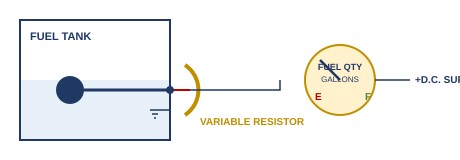
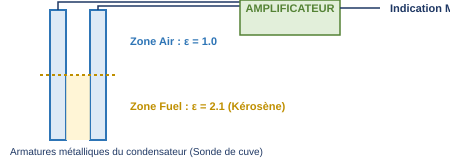

1. Introduction : L'importance du suivi du carburant
La connaissance précise de la quantité de carburant à bord (FOB — Fuel On Board) est une obligation critique avant le décollage, pendant le vol et après l'atterrissage[cite: 225]. Cette information est directement prise en compte pour :
- Le calcul de la masse totale au décollage (Take-Off Weight) et le respect des limites de centrage[cite: 226, 263].
- Le suivi rigoureux de la consommation en temps réel et la détection d'éventuelles fuites[cite: 226].
- Le calcul de l'autonomie restante (Playtime / Endurance) et le choix des déroutements[cite: 226].
2. Unités de mesure et équivalences de conversion
Il existe deux méthodes principales pour indiquer la quantité de carburant à bord[cite: 252]:
- Indication Volumétrique (Aviation légère) : Exprimée en Litres, US Gallons (USG) ou Imperial Gallons (Imp Gal)[cite: 253, 254, 260].
- Indication Massique (Aviation commerciale et lourde) : Exprimée en Kilogrammes (kg) ou en Livres (lbs)[cite: 256, 257].
3. Systèmes de jaugeage et dispositifs de mesure
3.1. Jauge électrique à flotteur (Système volumétrique)
Principalement utilisée sur avion léger, elle se compose d'un flotteur relié à un bras articulé mécanique qui déplace le curseur d'une résistance variable (potentiomètre) alimentée en courant continu (DC)[cite: 250, 275, 291]. La variation de résistance modifie le courant traversant l'indicateur du cockpit[cite: 248, 249].

- Avantage : Conception simple, économique et robuste[cite: 279].
- Inconvénients et non-linéarité : L'indication n'est pas linéaire à cause de la forme géométrique souvent complexe et irrégulière des réservoirs d'ailes[cite: 278]. Le système est réglé pour être d'une précision maximale uniquement sur les positions Low (Bas) et Empty (Vide) pour des raisons évidentes de sécurité[cite: 277].
- Précision : Faible, de l'ordre de 10%[cite: 291].
• L'assiette de l'aéronef (Attitude) : En montée ou en descente, le carburant se déplace, décalant le flotteur[cite: 281].
• Les accélérations : Les virages ou turbulences créent des forces d'inertie sur le fluide[cite: 282].
• La température : Une hausse thermique dilate le carburant, faisant monter faussement le flotteur alors que la masse de carburant est restée stable[cite: 265, 283].
3.2. Jauge capacitive électronique (Système massique)
Le jaugeage capacitif est le standard de l'aviation commerciale. Il permet une mesure automatique en unités de **masse**, s'affranchissant totalement des variations de température[cite: 293, 332].
Une jauge de réservoir (Tank Unit) est constituée de tubes conducteurs métalliques concentriques formant un condensateur[cite: 295, 297, 344, 346]. La capacité électrique $C$ d'un condensateur dépend de la géométrie des armatures ($S/e$) et de la **permittivité relative (constante diélectrique $\epsilon$)** du milieu situé entre les armatures[cite: 322, 324]:
Le diélectrique est ici constitué par la combinaison du carburant et de l'air présents dans le réservoir[cite: 295, 313]:
- La constante diélectrique de l'air est égale à 1,0[cite: 325, 326].
- La constante diélectrique du kérosène (Jet A-1) est égale à environ 2,1[cite: 325, 327, 328].

À mesure que le réservoir se remplit, le carburant remplace l'air entre les plaques, ce qui fait **augmenter la capacité globale** mesurée par le système[cite: 294, 327]. Un réservoir plein présente une capacité deux fois plus élevée qu'un réservoir vide ($C_1 = 2 \times C_0$)[cite: 326, 327].
Rôle de l'unité de référence (Compensateur)
La permittivité du kérosène peut légèrement dévier de sa valeur nominale en fonction de sa composition chimique exacte ou s'il subit une baisse de température (ce qui engendre une baisse de sa permittivité $\epsilon_r$ parallèlement à une augmentation de sa densité)[cite: 319, 335, 342, 343]. Pour éliminer cette erreur, une unité de référence (compensateur de densité) est impérativement installée au point le plus bas de la cuve, garantissant qu'elle reste totalement immergée dans le carburant[cite: 320]. Elle ajuste en permanence le calcul pour maintenir une indication de masse exacte à 1% près[cite: 350].
• Coupure ou défaillance électrique de la sonde : Si la jauge subit une rupture électrique complète ou une panne de son circuit, la capacité mesurée chute instantanément vers zéro[cite: 334]. L'indicateur de cockpit va alors basculer en affichant un réservoir **strictement vide (Empty)**, constituant une sécurité positive[cite: 334].
4. Procédures d'avitaillement (Refueling Cross-Check)
Afin de prévenir les pannes sèches causées par une mauvaise saisie ou une anomalie instrumentale, l'équipage doit mener une double vérification systématique[cite: 355, 356, 358]:
- Avant l'avitaillement : Noter la quantité résiduelle à bord (FOB)[cite: 353]. Elle doit correspondre au carburant de départ du vol précédent diminué de la consommation réelle calculée[cite: 353, 354].
- Conversion d'unités : Convertir le volume de carburant commandé au camion d'avitaillement (généralement délivré en Litres) dans l'unité de masse utilisée par les jauges de l'avion (kg ou lbs) en utilisant la densité du jour[cite: 355].
- Après l'avitaillement : Comparer la valeur finale affichée au cockpit à la somme mathématique : $\text{FOB initiale} + \text{Masse ajoutée}$[cite: 356].
En cas d'écart significatif, le pilote doit faire vérifier le bon de livraison du fournisseur et demander un contrôle technique du système de jaugeage de bord (FQIS — Fuel Quantity Indicator System)[cite: 357, 358, 361]. Les calculs de performance et de devis de masse de l'appareil devront obligatoirement être recalculés[cite: 362].
5. Débitmètres de carburant (Fuel Flowmeters)
Le débitmètre mesure le débit de carburant consommé par le moteur par unité de temps (ex: kg/h ou lbs/h pour les réacteurs, L/h ou USG/h pour les pistons)[cite: 364, 365, 366].
Emplacement des capteurs dans le circuit :
- Sur moteur à pistons : Le débitmètre est inséré entre la pompe à carburant et le carburateur ou le système d'injection[cite: 371].
- Sur turboréacteur : Le capteur se situe obligatoirement en aval, entre la pompe haute pression (HP Pump) et les injecteurs de la chambre de combustion[cite: 370].
Débitmètre intégrateur
La consommation totale consommée depuis le bloc (Fuel Used) est obtenue en intégrant mathématiquement le débit instantané par rapport au temps écoulé[cite: 372]. Un appareil capable d'afficher simultanément le débit horaire actuel et la quantité totale consommée est qualifié de Débitmètre Intégrateur (Integrated Flowmeter)[cite: 373].